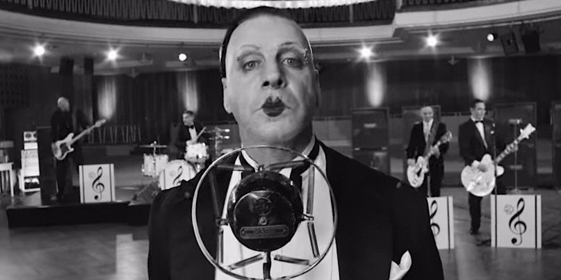

The Horror Behind Rammstein’s Song ‘Radio’
A few weeks ago we examined the fuss that Rammstein had caused with the video for ‘Deutschland‘ after some groups focused on a tiny part of the video rather than taking the video and the message of the song into account. Strangely, it seems that the opposite has happened with ‘Radio‘, where the depth of the song has completely gone over the head of the media.
Every member of Rammstein was born in East Germany, which may be a little confusing for those born in the 80’s or later who aren’t into their history. In very simple terms, following World War II Germany was divided into East and West – West Germany would be occupied by US and British forces while the East would be occupied by Russia. A socialist government was installed in East Germany who answered to the Russians. As Russia exported billions of dollars out of East Germany as “war reparations”, the country became stricken by poverty and a huge number of young, educated people fled into neighbouring West Germany. While East Germans were only allowed to travel within East Germany itself anyway, in 1961 construction begun of The Berlin Wall – a border wall between East and West Germany. When finished the wall stood 12 feet high with tubes across the top to make scaling it difficult, beds of nails under any overhangs to prevent climbing and worst of all, the “death strip”; a huge area between the outer and inner walls which was vast open ground littered with landmines and guarded by snipers in watchtowers. East Germans were now totally trapped. Anything of Western origin was forbidden and the government strictly enforced this. The only real positive of note was that East German women were more independent and were treated with more equality than their Western counterparts – more had jobs and they were more sexually liberated, another theme of the ‘Radio‘ video. Rammstein frontman Till Lindemann was born in Leipzig in 1963 and so to understand his upbringing, I spoke with someone who also grew up in Leipzig at that time whose story I was already aware of. For understandable reasons Marion (not her real name) has deliberately tried to forget about East Germany and rarely talks about it. “I had forgotten most of it but after listening to Till Lindemann’s lyrics I actually started remembering quite a lot. West German radio and west German TV was banned in the DDR (Deutsche Demokratische Republik/German Democratic Republic/East Germany). Under the DDR regime, we weren’t able to listen to the much sighed-for radio stations, the reception got jammed. But late at night, we would sit in front of the radio and sometimes got lucky and were able to listen to the western radio stations for an hour or two. But as mentioned, it was prohibited to listen to them. We would sit with our ears pressed against the radio speaker so that we wouldn’t miss out on any of the hits, the DDR radio stations would only play German Schlager music.”
EXCLUSIVE FEATURES
The Horror Behind Rammstein’s Song ‘Radio’ May 6, 2019 - by Morg - 1 Comment Rammstein’s ‘Radio’, like ‘Deutschland’, is deeper than you think. An image captured from Rammstein's 'Radio' music video. The image shows Rammstein dressed as an old 1920's era band in tuxedos,. A few weeks ago we examined the fuss that Rammstein had caused with the video for ‘Deutschland‘ after some groups focused on a tiny part of the video rather than taking the video and the message of the song into account. Strangely, it seems that the opposite has happened with ‘Radio‘, where the depth of the song has completely gone over the head of the media. Every member of Rammstein was born in East Germany, which may be a little confusing for those born in the 80’s or later who aren’t into their history. In very simple terms, following World War II Germany was divided into East and West – West Germany would be occupied by US and British forces while the East would be occupied by Russia. A socialist government was installed in East Germany who answered to the Russians. As Russia exported billions of dollars out of East Germany as “war reparations”, the country became stricken by poverty and a huge number of young, educated people fled into neighbouring West Germany. While East Germans were only allowed to travel within East Germany itself anyway, in 1961 construction begun of The Berlin Wall – a border wall between East and West Germany. When finished the wall stood 12 feet high with tubes across the top to make scaling it difficult, beds of nails under any overhangs to prevent climbing and worst of all, the “death strip”; a huge area between the outer and inner walls which was vast open ground littered with landmines and guarded by snipers in watchtowers. East Germans were now totally trapped. Anything of Western origin was forbidden and the government strictly enforced this. The only real positive of note was that East German women were more independent and were treated with more equality than their Western counterparts – more had jobs and they were more sexually liberated, another theme of the ‘Radio‘ video. Rammstein frontman Till Lindemann was born in Leipzig in 1963 and so to understand his upbringing, I spoke with someone who also grew up in Leipzig at that time whose story I was already aware of. For understandable reasons Marion (not her real name) has deliberately tried to forget about East Germany and rarely talks about it. “I had forgotten most of it but after listening to Till Lindemann’s lyrics I actually started remembering quite a lot. West German radio and west German TV was banned in the DDR (Deutsche Demokratische Republik/German Democratic Republic/East Germany). Under the DDR regime, we weren’t able to listen to the much sighed-for radio stations, the reception got jammed. But late at night, we would sit in front of the radio and sometimes got lucky and were able to listen to the western radio stations for an hour or two. But as mentioned, it was prohibited to listen to them. We would sit with our ears pressed against the radio speaker so that we wouldn’t miss out on any of the hits, the DDR radio stations would only play German Schlager music.” While the rest of the world had the birth of Rock and Roll in the 1950’s through Little Richard, Elvis Presley, Johnny Cash and piano burning, underage cousin marrying lunatic Jerry Lee Lewis, East Germans were stuck with acts like Heino, who is a good example of Schlager music. Likewise, The Beatles were unknown in East Germany. “Years later, in the 1970’s, the radio programmes became more relaxed and they were allowed to play 30% western/foreign hits and 70% DDR songs. I, for example, had a Sanyo cassette tape recorder which I bought underhand and once per week I would sit in front of the radio and record top of the pops, which was broadcast by Tele Luxembourg and hosted by Frank Elsner. The quality was awful, of course, but at least I was able to record the latest hits. My cousin, who lived in west Germany, sent me clippings of the Bravo magazine (German music magazine for teenagers) in the post every week, so that I could get posters of the Rolling Stones, Golden Earring, and Sonny and Cher and put them up on the walls of my bedroom. It was the same with TV, western stations were banned and it was prohibited to watch them. We wouldn’t have been able to watch it anyway, as we had just one channel “Antenne 9” which only broadcast DDR TV shows, and for teenage girls like me that was a nightmare, because I was unable to watch Beat Club with Uschi Nerke. But thankfully a guy from our group of friends installed a proper antenna – secretly, of course, without knowledge of my mother, so that I was able to watch my beloved music shows. An unforgettable moment and the absolute highlight was the Rolling Stones concert 1969 at Hyde Park in London – 10 people squeezed in the living room of my mum and we had an absolute blast – even more so because we did something so forbidden. Popular musicians and bands in the DDR were Karat, City, Silly. Die Puhdys, and Nina Hagen und Band.”
We asked Marion for her thoughts on Rammstein‘s ‘Radio‘, specifically the song, not the video. “It’s good that Rammstein made this song, and Radio is exactly how it was back then, but I’m not sure whether it helps young people to understand how growing up in the DDR was, Till on the other hand still encountered and grew up with it” Marion didn’t want to talk about specifics but agreed to us publishing the following details. As a young woman she attempted to escape from East Germany but was caught and sent to prison where she was treated terribly by the guards. Her story sadly, isn’t a unique one. 75,000 people were imprisoned in East Germany for trying to escape. 1,435 were killed trying to escape. ‘Radio‘ isn’t a song “Set throughout various eras of German history, the video (and song) examine East Germany’s relationship with Western culture – specifically the banning of the consumption of music, art and culture from the West by the German Democratic Republic.” as Metal Hammer put it. It’s a song about people trapped – one television channel with state approved content, making radio the main form of entertainment with only two hours a night of poor quality music to provide a window to the outside world. It’s the lifeline of a people who face prison or death if they try to leave, young people who can only imagine the lives of other young people through a shared experience of music. It’s a song about a horror none of us can imagine. If you read the lyrics below, you’ll perhaps now appreciate that the song is significantly deeper than it would seem. We weren’t allowed to belong Couldn’t see, talk, or hear anything But every night for one or two hours, I disappeared from this world Every night a little bit happy, My ear so close to the world receiver Radio, my radio I let myself get sucked into the airwaves My ears become eyes Radio, my radio So I hear what I can‘t see Secretly satisfying my wanderlust We weren’t allowed to belong Couldn’t see, talk or disturb anything Every song was forbidden Such dangerous foreign notes But every night was a little bit happy My ear so close to the receiver Radio, my radio I let myself get sucked into the airwaves My ears become eyes Radio, my radio (my radio) So I hear what I cannot see Secretly satisfying my wanderlust Every night I secretly climbed onto the back of the music laid my ears down on the wings singing quietly into my hands Every night and again, I just fly away with the music Floating this way through brightly-lit rooms No borders, no fences Radio, radio Radio, radio Radio, my radio (my radio) I let myself get sucked into the airwaves My ears become eyes Radio, my radio (my radio) So I hear what I cannot see Secretly satisfying my wanderlust In the first verse it refers to the “world receiver” which was a radio which could pick up long range signals as opposed to the regular receiver which picked up short range local stations only. We are very grateful to Marion for being willing to discuss her experiences with us. It is the bravery of people like herself that helps us to learn from the past and to ensure that it does not happen again. A huge thanks to Stephanie Deich for interpreting during our interview with Marion. Each Monday The Metal Report sends out a list of all stories, interviews, reviews and features we’ve posted for the previous week. You can sign up for it here.